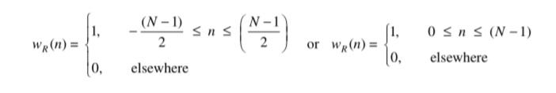
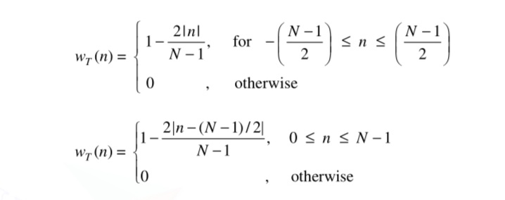
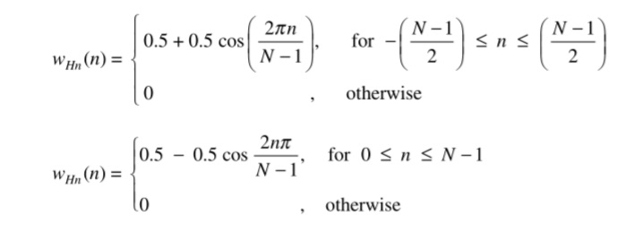
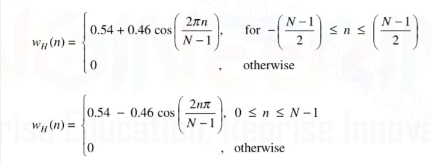
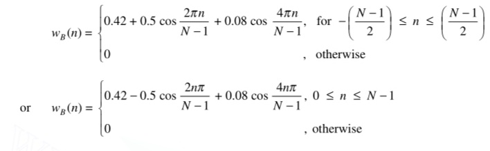
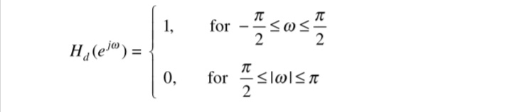
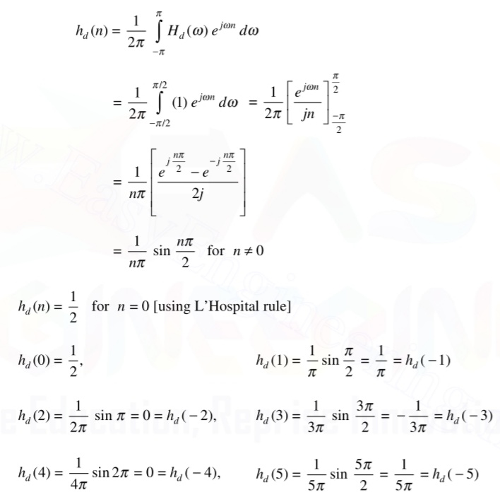
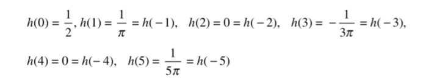
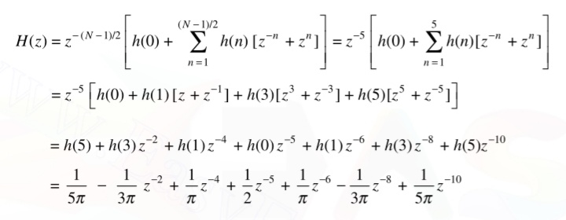
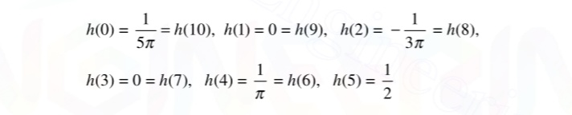

Design OF FIR Filters using Windows
The procedure for designing FIR filter using windows is:
- Choose the desired frequency response of the filter Hd(ω).
- Take inverse Fourier transform of Hd(ω ) to obtain the desired impulse response hd(n).
- Choose a window sequence w(n) and multiply hd(n) by w(n) to convert the infinite duration impulse response to a finite duration impulse response h(n).
- The transfer function H(z) of the filter is obtained by taking Z-transform of h(n).
Rectangular Window
The weighting function (window function) for an N-point rectangular window is given by,

If we design a low-pass filter using rectangular window, we find that the frequency response differs from the desired frequency response in many ways. It does not follow quick transitions in the desired response. The desired response of a low-pass filter changes abruptly from pass band to stop band, but the actual frequency response changes slowly. This region of gradual change is called filter’s transition region, which is due to the convolution of the desired response with the window response’s main lobe. The width of the transition region depends on the width of the main lobe. As the filter length N increases, the main lobe becomes narrower decreasing the width of the transition region
Triangular or Bartlett Window
The triangular window has been chosen such that it has tapered sequences from the middle on either side. The window function wT (n) is defined as,

In magnitude response of triangular window, the side lobe level is smaller than that of the rectangular window being reduced from –13 dB to –25 dB. However, the main lobe width is now 8 /N or twice that of the rectangular window.
The triangular window produces a smooth magnitude response in both pass band and stop band, but it has the following disadvantages when compared to magnitude response obtained by using rectangular window:
- The transition region is more.
- The attenuation in stop band is less
Because of these characteristics, the triangular window is not usually a good choice
Raised Cosine Window
The raised cosine window multiplies the central Fourier coefficients by approximately unity and smoothly truncates the Fourier coefficients toward the ends of the filter. The smoother ends and broader middle section produces less distortion of hd(n) around n = 0. It is also called generalized Hamming window.
The window sequence is of the form:

Hanning window
The Hanning window function is given by

The width of main lobe is 8 /N, i.e., twice that of rectangular window which results in doubling of the transition region of the filter. The peak of the first side lobe is –32 dB relative to the maximum value. This results in smaller ripples in both pass band and stop band of the low-pass filter designed using Hanning window. The minimum stop band attenuation of the filter is 44 dB. At higher frequencies the stop band attenuation is even greater. When compared to triangular window, the main lobe width is same, but the magnitude of the side lobe is reduced, hence the Hanning window is preferable to triangular window.
Hamming window
The Hamming window function is given by

In the magnitude response for N = 31, the magnitude of the first side lobe is down about 41dB from the main lobe peak, an improvement of 10 dB relative to the Hanning window. But this improvement is achieved at the expense of the side lobe magnitudes at higher frequencies, which are almost constant with frequency. The width of the main lobe is 8 /N. In the magnitude response of low-pass filter designed using Hamming window, the first side lobe peak is –51 dB, which is –7 dB lesser with respect to the Hanning window filter. However, at higher frequencies, the stop band attenuation is low when compared to that of Hanning window. Because the Hamming window generates lesser oscillations in the side lobes than the Hanning window for the same main lobe width, the Hamming window is generally preferred.
Blackmann window
The Blackman window function is another type of cosine window and given by the equation,

In the magnitude response, the width of the main lobe is 12π /N, which is highest among windows. The peak of the first side lobe is at –58 dB and the side lobe magnitude decreases with frequency. This desirable feature is achieved at the expense of increased main lobe width. However, the main lobe width can be reduced by increasing the value of N. The side lobe attenuation of a low-pass filter using Blackman window is –78 dB.
| Type of window | Approximate transition width of main lobe | Minimum stop band attenuation (dB) | Peak of first side lobe (dB) |
|---|---|---|---|
| Rectangular | 4π /N | -21 | -13 |
| Bartlett | 8π /N | -25 | -25 |
| Hanning | 8π /N | -44 | -31 |
| Hamming | 8π /N | -51 | -41 |
| Blackmann | 12π /N | -78 | -58 |
Example
Design an ideal low-pass filter with N = 11 with a frequency response given by,

Solution
The filter coefficients are given by,

Assuming the window function,
Therefore, the designed filter coefficients are given as,

The above coefficients correspond to a non-causal filter which is not realizable. The realizable digital filter transfer function H(z) is given by

Therefore, the coefficients of the realizable digital filter are:
